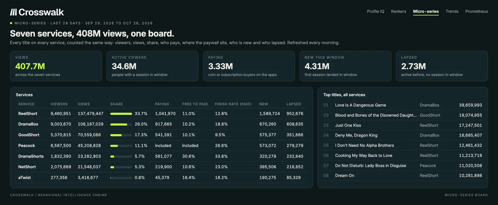
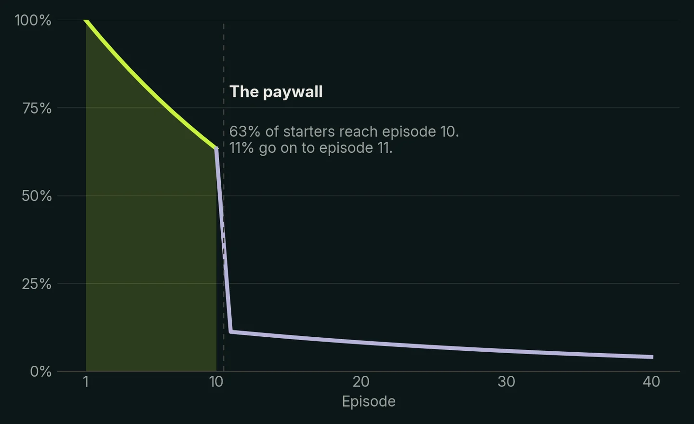
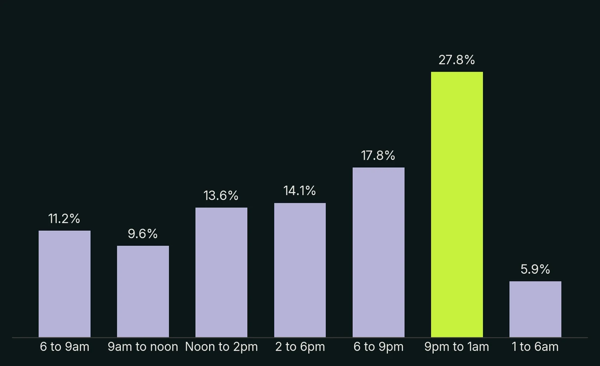
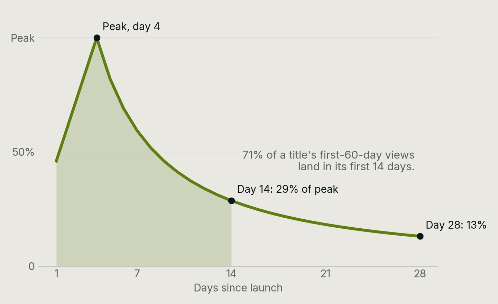

Micro-series are scripted series told in vertical, phone-first episodes of a minute or two, sold by the episode or the month. A third of the country has seen one. The apps that carry them publish nothing about who watches. Crosswalk sees those people on their own phones: every service, every title, every paywall, every morning.
Also called microdramas, vertical dramas and short dramas. Included in the Crosswalk license.

Every service counted the same way for the same window: who watched, how much, who paid, how many were new and how many lapsed. September 29, 2026 to October 26, 2026. Peacock's hub is inside its subscription, so it carries no coin figures.
| Service | Viewers | Views | Share of views | Paying viewers | Free to paid | New | Lapsed |
|---|---|---|---|---|---|---|---|
| ReelShort | 9,460,951 | 137,479,447 | 33.7% | 1,041,970 | 11.0% | 1,589,724 | 952,676 |
| DramaBox | 9,003,670 | 106,187,029 | 26.0% | 917,665 | 10.2% | 670,260 | 608,635 |
| GoodShort | 5,370,815 | 70,559,086 | 17.3% | 541,391 | 10.1% | 575,377 | 351,666 |
| Peacock | 6,587,500 | 45,208,828 | 11.1% | in the subscription | n/a | 573,072 | 279,279 |
| DramaShorts | 1,832,390 | 23,282,803 | 5.7% | 561,077 | 30.6% | 320,279 | 232,840 |
| NetShort | 2,075,669 | 21,548,037 | 5.3% | 219,900 | 10.6% | 395,506 | 216,852 |
| aTwist | 277,356 | 3,416,677 | 0.8% | 45,379 | 16.4% | 190,275 | 85,329 |
What this means. Three apps take three quarters of the views. Peacock's hub reached 6.6 million viewers in its first season inside a subscription people already pay for. aTwist, six weeks old, grew its audience 326% in the window.
Just One Kiss on ReelShort: 63% of starters reach the last free episode. 11% pay to see the next one. Across the coin apps the shape is the same.

The micro-series app audience against US adults, trailing 12 months.
Women are 61.2% of app users, and the male share rose from 31.4% to 39.8% across the year as action and mafia titles grew.
The largest group is 25 to 34 at 26.3%, with 35 to 44 close behind at 24.1%. Only 6.7% are 65 or older.
With 51.8% raising children at home, against 43.4% of US adults, the series fit the hour after the kids are down.
Four in ten earn $25,000 to $75,000, and one in seven earns $150,000 or more.
Hispanic viewers are 20.6% and Black viewers 15.2%, both above their share of US adults. White viewers are 54.3%.
Billionaire romance runs 74% women and werewolf fantasy 65%, while action and mafia titles are 54% men.
Where new app users came from in the last year, and how many of each door's arrivals were still active after 28 days. People who came looking stay at half again the rate of people a feed ad interrupted. The median path is nine days and three clips of one title before the install.

Across 1,284 launches this year, views peaked on day four and sat at 13% of peak four weeks in. 71% of a title's first-60-day views land in its first two weeks.

Both are included in a Crosswalk license, for every seat on the company.
Every service and every title: viewers, views, share, who pays, where the paywall sits, who is new and who lapsed. Refreshed with yesterday's plays.
The Micro-Series IQ report on Peacock, ReelShort, DramaBox, GoodShort and NetShort: what moved, what launched, what the audience did.
A Profile IQ on any title, service or lead: age, gender, income, location, and what else they buy, watch and use, indexed against the country.
Ask Prometheus in chat: what a hub launch did for signups, the path from clip to paywall, viewership on any title.
Each one has a decision this year that nobody else can put a number on.
Next to the others. Rankers IQ is the board for free TV, streaming, music, podcasts and gaming. Profile IQ is the audience behind any one title. Micro-series is the board for the newest screen.
A micro-series is a scripted series told in vertical, phone-first episodes of one to three minutes, usually fifty to a hundred of them, sold by the episode or by the month. The format is also called a microdrama, a vertical drama or a short drama.
ReelShort, DramaBox, GoodShort, NetShort, DramaShorts and aTwist are the dedicated apps. Peacock added a micro-series hub inside its own app in 2026, and clips of every title run on TikTok, YouTube, Facebook and Instagram.
In the twelve months to October 2026, 103.3 million US people saw a micro-series clip or episode, 61.5 million watched three or more episodes of one series, 38.3 million used a dedicated app or the Peacock hub, and 5.4 million paid.
Women are 61% of app users and men are the fastest-growing share. Half are 25 to 44, half have children at home, and 94% of plays happen on a phone, a third of them between 9pm and 1am.
Most apps give the first ten or so episodes away and charge coins per episode or a monthly pass after that. About 61% of viewers reach that paywall on a series they start, 39% of them unlock the next episode and 11% put money in within a week.
Yes. Peacock's hub sits on the same board as the apps, counted the same way: viewers, views, share, finish rate, new and lapsed viewers. The weekly Micro-Series IQ report covers Peacock, ReelShort, DramaBox, GoodShort and NetShort.
From the Crosswalk panel: 10 million US people whose digital lives are observed every day, projected to the US population. The board refreshes every morning with yesterday's plays.
Both are included in a Crosswalk license. Talk to us and we will open the board for your team.
We will open the board for your team and walk you through the first week's report.